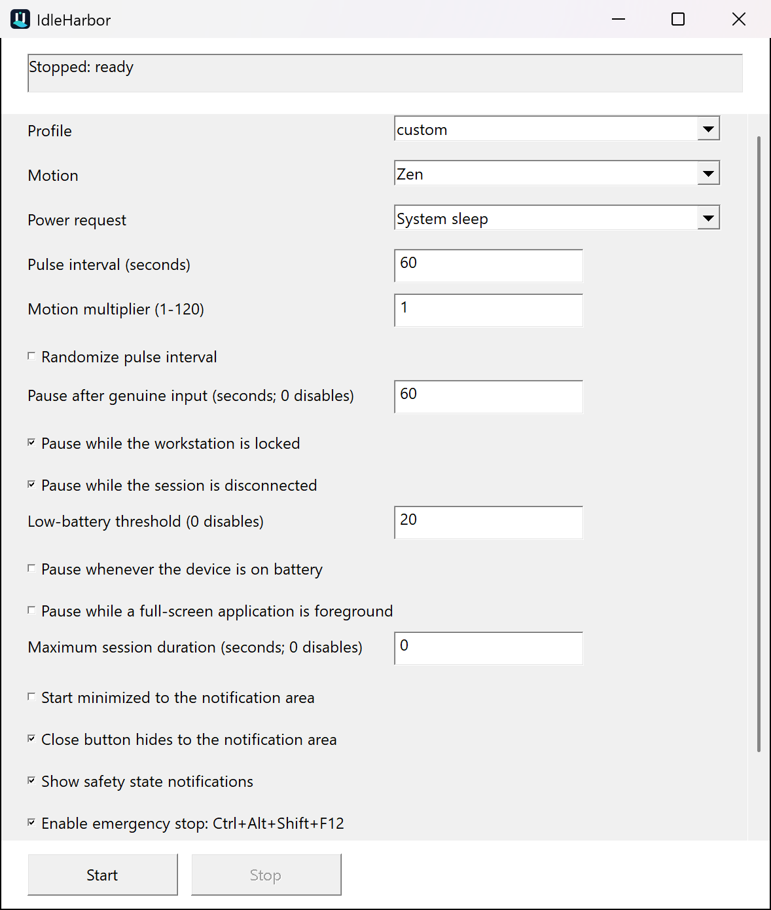
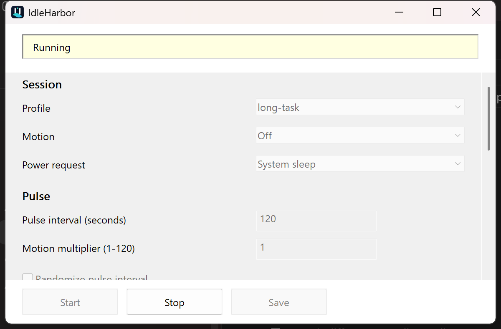
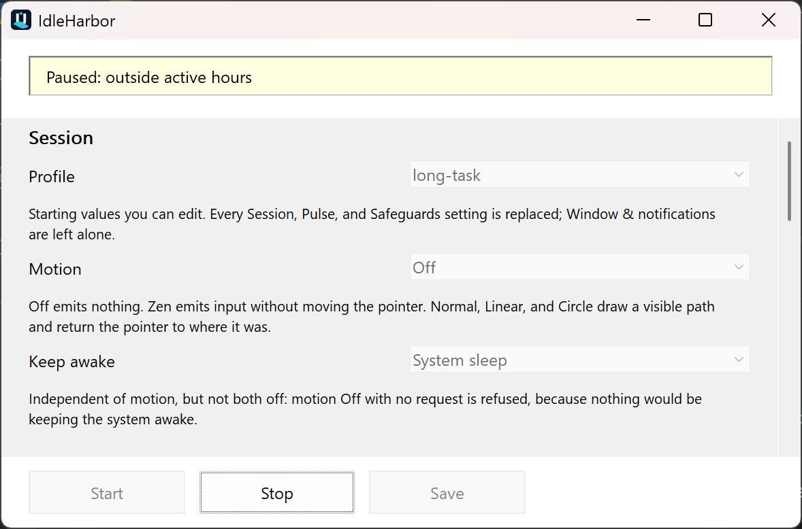
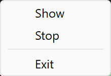

A Windows mouse jiggler that doesn't hide from you
IdleHarbor is a free, open-source keep-awake utility for Windows. It can send bounded mouse movement, ask Windows to stay awake, or both — and out of the box it pauses itself when you start typing, when you lock the PC, or when the battery drops below 20%. Pausing on battery power at all, or for a full-screen app, is there too and switched off by default.
- Native C++20 & Win32
- No .NET, Electron, or installer required
- No telemetry, no network service
- Around 530 KB
- Portable
What it actually does
Two independent mechanisms, either or both of which you can turn on. Motion sends a small, bounded input pulse for applications that watch for activity. Keep awake asks Windows itself to keep the system or the display available, which needs no simulated input at all. Neither one is hidden: a visible window and a notification-area icon always show whether a session is running, paused, or stopped, and why.
Bounded motion
Off, Normal, Zen, Circle, and Linear. Visible paths stay inside a small area around a safe anchor and return the pointer to exactly where it was.
Windows power requests
Ask Windows to keep the system awake, or the system and display both, for as long as the session runs. The request is cleared on pause, stop, and shutdown.
Safeguards that pause for you
Real typing or mouse movement, a locked workstation, a disconnected session, and low battery are on by default. Running on battery at all, a full-screen app, active hours, and a maximum session length are available and start switched off.
Named profiles
Balanced, Long task, Presentation, Compatibility, Visible, Battery saver, and Custom. Each is a starting point you can edit before saving.
Portable or installed
Unzip and run, or use the per-user installer. Automatic startup is always an explicit, separate choice, never enabled for you.
An immediate stop path
A Stop button, a tray menu, and an optional emergency hotkey — Ctrl+Alt+Shift+F12 — that ends the session from anywhere.
Screenshots
Real captures of the published release at 200% Windows display scaling, not mock-ups. Every field carries a short printed explanation, and every control describes itself in more detail when you hover it.




Motion modes
Motion is independent of the keep-awake request. You can use one, both, or neither — except turning both off, which IdleHarbor refuses, because nothing would be keeping the machine awake.
| Mode | What it emits |
|---|---|
| Off | Nothing. Pair it with a keep-awake request when you do not want any simulated input. |
| Normal | A small visible diagonal path, scaled by the motion size. |
| Zen | Virtual mouse input intended not to move the visible pointer. |
| Circle | A bounded circular path — the most visible of the modes. |
| Linear | A horizontal back-and-forth path. |
Download
The GitHub release page is the only supported download. Take the archive that matches your PC
— x64 for most Windows PCs, ARM64 for Windows on Arm
— then verify it against the published SHA256SUMS.txt before running it.
Every release publishes SHA-256 checksums, an SPDX 2.3 SBOM for each executable, and GitHub build provenance attestations. Releases are not Authenticode-signed, so Windows will report no publisher — check the hash and the attestation instead:
# Hash the ZIP before extracting it: SHA256SUMS.txt lists the archives, not the executable.
Get-FileHash .\IdleHarbor-0.2.0-windows-x64-portable.zip -Algorithm SHA256
gh attestation verify .\IdleHarbor-0.2.0-windows-x64-portable.zip --repo Chris0Jeky/IdleHarborPackage managers: a WinGet submission is waiting on upstream moderation, and a reviewed Chocolatey package source is in the repository but not yet published. Until one of those is accepted, use the GitHub release page.
What IdleHarbor will not do
Read this before using it on a work machine
IdleHarbor is not an employee-monitoring bypass, and it must not be used to misrepresent presence or evade a device policy. Simulated input can be detected, blocked, logged, or ignored by the applications you are trying to satisfy.
It contains no concealment, no process hiding, no misleading identity, no telemetry, no network access, no elevation, and no persistence you did not explicitly configure. If your device is managed, check the rules that apply to it — and to automatic startup, which may be a separate decision — before installing anything.
Frequently asked questions
Is IdleHarbor free?
Yes. It is free software under the GNU General Public License version 3 only (GPL-3.0-only). The complete source and the release archives are public, and the archives include the full licence text.
Does it need .NET, Electron, or another runtime?
No. IdleHarbor is a native C++20/Win32 program built against Windows system libraries. There is nothing else to install, and the published x64 executable is 544,256 bytes. The ARM64 build differs in size; each release's SPDX SBOM records its own executable's identity.
Will it stop Windows from sleeping?
The System and Display keep-awake modes ask Windows to keep that power state available while a session runs. Whether the request is honoured can depend on Windows policy, hardware, lock state, battery settings, or a managed-device policy, so it is not a universal guarantee.
Does it move my mouse pointer?
Only if you choose a visible mode. Normal, Circle, and Linear draw a bounded path and return the pointer to where it was. Zen emits virtual input intended not to move the visible pointer. Off emits no motion at all.
Is it undetectable?
No, and it does not try to be. There is no concealment, no process hiding, and no monitoring bypass. Injected input is compatibility behaviour for legitimate idle prevention, never proof of presence and never a way around a security control.
How do I stop it immediately?
Use the Stop button, the notification-area menu, or the emergency hotkey Ctrl+Alt+Shift+F12 if you have enabled it. The session also pauses or stops by itself for any safeguard you have turned on.
Does it collect any data?
No. There is no telemetry and no network service. Settings are stored in a local INI file — beside the executable in portable mode, or in your local application-data directory otherwise.
Is it appropriate for a managed work laptop?
Only if the device, the account, and your workplace rules allow it. Read the safety notes and obtain any approval you need first. Installing it and configuring automatic startup may be separate policy decisions.